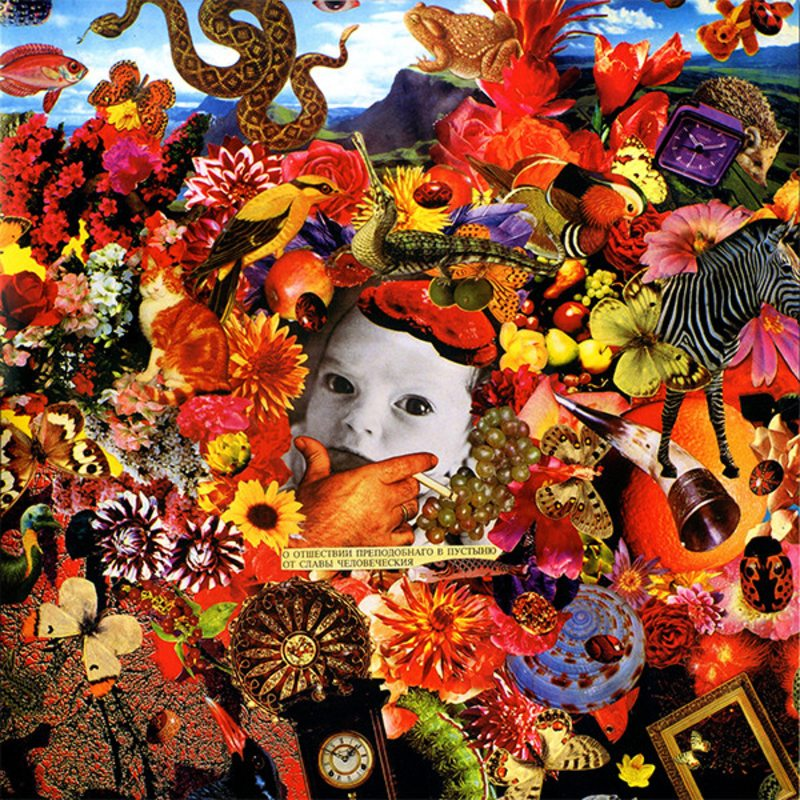

valera0.2

100 лет одиночиства
- «Свобода»
- «Евангелие»
- «Евангелие»
- «Дрызг и брызг»
- «Вечная весна»
- «Привыкать»
- «Зерно на мельницу»
- «Пуля виноватого найдёт»
- «Зря вы это всё»
- «Офелия»
- «Передозировка»
- «Простор открыт»
- «Будьте здоровы (Живите богато)»
- «Как-то утром на рассвете»
- «Туман»
- «В начале было слово»
- «Семь шагов за горизонт»
- «Семь шагов за горизонт, часть 2»
- «Следы на снегу»
- «Поживём — увидим»
- «Сто лет одиночества»
- «О отшествии преподобнаго в пустыню от славы человеческия»